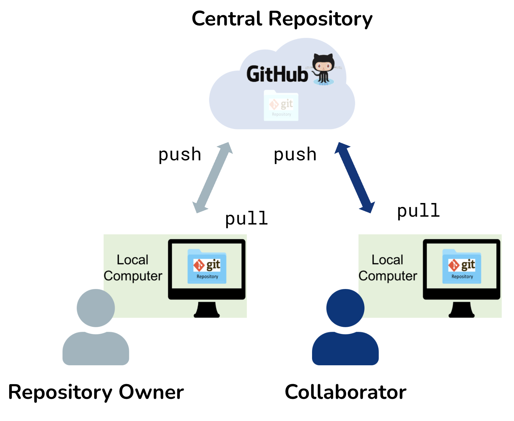
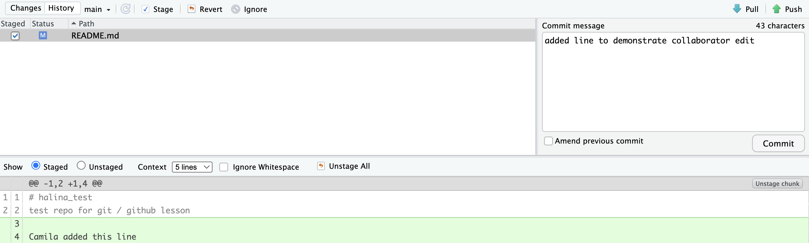
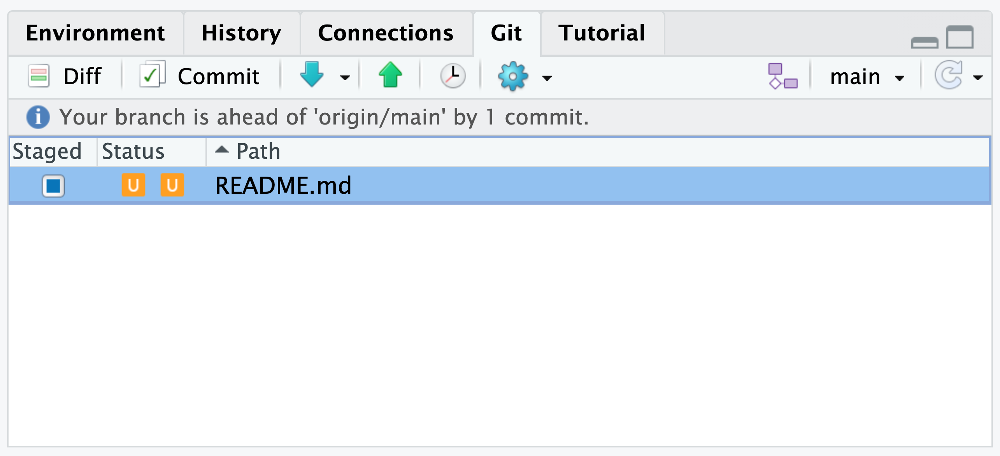
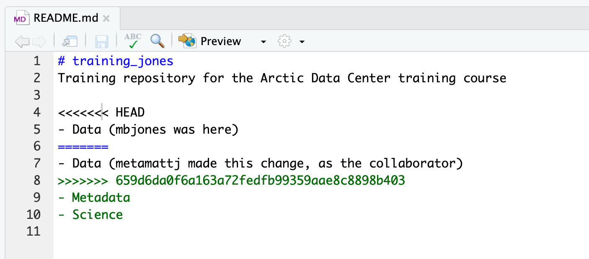

Learning Objectives
- Apply the principles, features, and collaboration tools of Git and GitHub to effectively collaborate with colleagues on code
- Analyze and evaluate common causes of conflicts that arise when collaborating on repositories
- Demonstrate the ability to resolve conflicts using Git conflict resolution techniques
- Apply workflows and best practices that minimize conflicts on collaborative repositories
11.1 Introduction to Git and GitHub Tools for Collaboration
Git is not only a powerful tool for individual work but also an excellent choice for collaborating with friends and colleagues. Git ensures that after you’ve completed your contributions to a repository, you can confidently synchronize your changes with changes made by others.
One of the easiest and most effective ways to collaborate using Git is by utilizing a shared repository on a hosting service like GitHub. This shared repository acts as a central hub, enabling collaborators to effortlessly exchange and merge their changes. With Git and a shared repository, you can collaborate seamlessly and work confidently, knowing that your changes will be integrated smoothly with those of your collaborators.
There are many advanced techniques for synchronizing Git repositories, but let’s start with a simple example.
In this example, the Collaborator will clone a copy of the Owner’s repository from GitHub, and the Owner will grant them Collaborator status, enabling the Collaborator to directly pull and push from the Owner’s GitHub repository.
11.2 Collaborating with a trusted colleague without conflicts
We start our collaboration by giving a trusted colleague access to our repository on GitHub. In this example, we define the Owner as the individual who owns the repository, and the Collaborator as the person whom the Owner chooses to give permission to make changes to their repository.
The Collaborator will make changes to the repository and then push those changes to the shared repository on GitHub. The Owner will then use pull to retrieve the changes without encountering any conflicts. This is the most ideal workflow.
The instructors will demonstrate this process in the next section.
Step 1: Owner adds a Collaborator to their repository on GitHub
The Owner must change the settings of the remote repository and give the Collaborator access to the repository by inviting them as a collaborator. Once the Collaborator accepts the owner’s invitation, they will have push access to the repository – meaning they can contribute their own changes/commits to the Owner’s repository.
To do this, the owner will navigate to their remote repository on GitHub, then choose Settings > Collaborators > Add people, to send an email invitation. The invitation will show as “Pending” until accepted.
Step 2: Collaborator clones the remote repository
In order to contribute, the Collaborator must clone the repository from the Owner’s GitHub account (Note: as a Collaborator, you won’t see the repository appear under your profile’s Repositories page). To do this, the Collaborator should navigate to the Owner’s repository on GitHub, then copy the clone URL. In RStudio, the Collaborator will create a new project from version control by pasting this clone URL into the appropriate dialog box (see the earlier chapter introducing GitHub).
INTERMEDIATE STEP: Collaborator communicates with Owner that they plan to make some changes
Frequent communication is SO important when collaborating! Letting one another know that you’re about to make and push changes to the remote repo can help to prevent merge conflicts (and reduce headaches). The easiest way to avoid merge conflicts is to ensure that you and your collaborators aren’t working on the same file(s)/section(s) of code at the same time.
Step 3: Collaborator edits files locally
With the repo cloned locally, the Collaborator can now make changes to the README.md file, adding a line or statement somewhere noticeable near the top. Save the changes.
Step 4: Collaborator commits, pulls, and pushs
It’s recommended that all collaborators (including the repo Owner) follow this workflow when syncing changes between their local repo and the remote repo (in this example, the Collaborator is now following these steps):
addandcommityour modified file(s) (e.g. the updatedREADME.md)pullto fetch and merge changes from the remote/origin repository (in an ideal situation, as we’re demonstrating here, any potential changes are merged seamlessly without conflict)pushyour changes to the remote/origin repository
Why do I need to add and commit files before pulling?
Remember, git pull is a combination of git fetching remote changes to your local repo and git mergeing those changes from your local repo into your local working file(s).
The merge part of git pull will fail if you have uncommitted changes in your local working file(s) to avoid any potential overwriting of your own changes. Because of this, you should always, add/commit then pull, and finally push.

INTERMEDIATE STEP: Collaborator communicates with Owner that they pushed their changes to GitHub
Remember, communication is key! The Owner now knows that they can pull those changes down to their local repo.
Step 5: Owner pulls new changes from the remote repo to their local repo
The Owner can now open their local working copy of the code in RStudio, and pull to fetch and merge those changes into their local copy.
Congrats, the Owner now has your changes! Now, all three repositories – the remote/origin repository on GitHub, the Owner’s local repository, and the Collaborator’s local repository – should all be in the exact same state.
INTERMEDIATE STEP: Owner communicates with Collaborator that they now plan to make some changes
Did we mention that communication is important? :)
Step 6: Owner edits, commits, pulls (just in case!) and pushes
Following the same workflow as the Collaborator did earlier:
addandcommityour modified file(s) (e.g. the updatedREADME.md)pullto fetch and merge changes from the remote/origin repository (in an ideal situation, as we’re demonstrating here, any potential changes are merged seamlessly without conflict)pushyour changes to the remote/origin repository
INTERMEDIATE STEP: Owner communicates with Collaborator that they pushed their changes to GitHub
Yes, this seems silly to repeat, yet again – but it’s also easy to forget in practice!
Step 7: Collaborator pulls new changes from the remote repo to their local repo
The Collaborator can now pull down those changes from the Owner, and all copies are once again fully synced. And just like that, you’ve successfully collaborated!
11.3 Exercise 1: With a partner collaborate in a repository without a merge conflict
11.3.1 Defining Merge Method
Some Git configuration to surpress warning messages
Git version 2.27 includes a new feature that allows users to specify the default method for integrating changes from a remote repository into a local repository, without receiving a warning (this warning is informative, but can get annoying). To suppress this warning for this repository only we need to configure Git by running this line of code in the Terminal:
git config pull.rebase falsepull.rebase false is a default strategy for pulling where Git will first try to auto-merge the files. If auto-merging is not possible, it will indicate a merge conflict.
Note: Unlike when we first configured Git, we do not include the --global flag here (e.g. git config --global pull.rebase false). This sets this default strategy for this repository only (rather than globally for all your repositories). We do this because your chosen/default method of grabbing changes from a remote repository (e.g. pulling vs. rebasing) may change depending on collaborator/workflow preference.
11.4 A Note on Advanced Collaboration Techniques
There are many Git and GitHub collaboration techniques, some more advanced than others. We won’t be covering advanced strategies in this course. But here is a table for your reference on a few popular Git collaboration workflow strategies and tools.
| Collaboration Technique | Benefits | When to Use | When Not to Use |
|---|---|---|---|
| Branch Management Strategies | 1. Enables parallel development and experimentation 2. Facilitates isolation of features or bug fixes 3. Provides flexibility and control over project workflows |
When working on larger projects with multiple features or bug fixes simultaneously. When you want to maintain a stable main branch while developing new features or resolving issues on separate branches. When collaborating with teammates on different aspects of a project and later integrating their changes. |
When working on small projects with a single developer or limited codebase. When the project scope is simple and doesn’t require extensive branch management. When there is no need to isolate features or bug fixes. |
| Code Review Practices | 1. Enhances code quality and correctness through feedback 2. Promotes knowledge sharing and learning within the team 3. Helps identify bugs, improve performance, and ensure adherence to coding standards |
When collaborating on a codebase with team members to ensure code quality and maintain best practices. When you want to receive feedback and suggestions on your code to improve its readability, efficiency, or functionality. When working on critical or complex code that requires an extra layer of scrutiny before merging it into the main branch. |
When working on personal projects or small codebases with no collaboration involved. When time constraints or project size make it impractical to conduct code reviews. When the codebase is less critical or has low complexity. |
| Forking | 1. Enables independent experimentation and development 2. Provides a way to contribute to a project without direct access 3. Allows for creating separate, standalone copies of a repository |
When you want to contribute to a project without having direct write access to the original repository. When you want to work on an independent variation or extension of an existing project. When experimenting with changes or modifications to a project while keeping the original repository intact. |
When collaborating on a project with direct write access to the original repository. When the project does not allow external contributions or forking. When the project size or complexity doesn’t justify the need for independent variations. |
| Pull Requests | 1. Facilitates code review and discussion 2. Allows for collaboration and feedback from team members 3. Enables better organization and tracking of proposed changes |
When working on a shared repository with a team and wanting to contribute changes in a controlled and collaborative manner. When you want to propose changes to a project managed by others and seek review and approval before merging them into the main codebase. |
When working on personal projects or individual coding tasks without the need for collaboration. When immediate changes or fixes are required without review processes. When working on projects with a small team or single developer with direct write access to the repository. |
The “When Not to Use” column provides insights into situations where it may be less appropriate / unnecessary to use each collaboration technique, helping you make informed decisions based on the specific context and requirements of your project.
These techniques provide different benefits and are used in various collaboration scenarios, depending on the project’s needs and team dynamics.
11.5 Merge conflicts
Merge conflicts occur when both collaborators make conflicting changes to the same file. Resolving merge conflicts involves identifying the root of the problem and restoring the project to a normal state. Good communication, discussing file sections to work on, and avoiding overlaps can help prevent merge conflicts. However, if conflicts do arise, Git warns about potential issues and ensures that changes from different collaborators based on the same file version are not overwritten. To resolve conflicts, you need to explicitly specify whose changes should be used for each conflicting line in the file.
In this image, we see collaborators mbjones and metamattj have both made changes to the same line in the same README.md file. This is causing a merge conflict because Git doesn’t know whose changes came first. To resolve it, we need to tell Git whose changes to keep for that line, and whose changes to discard.

11.5.1 Common ways to resolve a merge conflict
1. Abort, abort, abort…
Sometimes you just made a mistake. When you get a merge conflict, the repository is placed in a “Merging” state until you resolve it. There’s a Terminal command to abort doing the merge altogether:
git merge --abortOf course, after doing that you still haven’t synced with your Collaborator’s changes, so things are still unresolved. But at least your repository is now usable on your local machine.
2. Checkout
The simplest way to resolve a conflict, given that you know whose version of the file you want to keep, is to use the command line to tell Git to use either your changes (the person doing the merge), or their changes (the Collaborator).
- keep your Collaborator’s file:
git checkout --theirs conflicted_file.Rmd - keep your own file:
git checkout --ours conflicted_file.Rmd
Once you have run that command, then run add (staging), commit, pull, and push the changes as normal.
3. Pull and edit the file
Option 2, above, requires the command line, however, we have a third option for resolving the merge conflict from RStudio. Using this approach will allow us to pick and choose some of our changes and some of our Collaborator’s changes by letting us manually edit and fix the conflicted file.
When you pull a file with a conflict, Git will provide you with a warning modify the file so that it includes both your own changes and your Collaborator’s changes. The file will also appear in the Git tab with an orange U icon, which indicates that the file is Unmerged and therefore awaiting your help to resolve the conflict. It delimits these blocks of conflicted code with a series of less than and greater than signs, so they are easy to find:

In the above example, <<<<<<< HEAD marks the start of your changes. The ======= delimiter separates your changes from your Collaborator’s conflicting changes. >>>>>>> mark the end of your Collaborator’s changes.
To resolve the conflicts, simply find all of these blocks, and edit them so that the file looks how you want (either pick your lines, your Collaborator’s lines, some combination, or something altogether new), and save. Be sure you removed the delimiter lines that started with
<<<<<<<=======>>>>>>>
Once you have made those changes, you simply add (staging), commit, and push the files to resolve the conflict.
11.6 Producing and resolving merge conflicts
To illustrate this process, the instructors are going to carefully create a merge conflict step-by-step, show how to resolve it, and show how to see the results of the successful merge after it is complete. First, the instructors will walk through the exercise to demonstrate the issues. Then, participants will pair up and try the exercise.
Step 1: Owner and Collaborator ensure that their local repos are synced with the remote repo
Pair with the same partner as in Exercise 1 and decide who will be the Owner and who will be the Collaborator. Begin the exercise by ensuring that both the Owner and Collaborator have all of the changes synced from the remote repo to their local repos. This includes doing a git pull to ensure that you have all changes locally, and ensuring that the Git tab in RStudio doesn’t show any changes that need to be committed.
Step 2: Owner makes a change and commits locally
From this clean slate, the Owner will first modify and commit a small change. The Owner should add their name on a specific line of the README.md file (we will change the title in line 1). Save and commit the change (but DO NOT push). The Owner should now have a local but unpushed commit that the Collaborator does not yet have access to.
Step 3: Collaborator makes a change and commits on the same line
Now, the Collaborator will modify and commit a small change. The Collaborator should add their name to the same line of the README.md file (we will again change the title in line 1). Save and commit the change (but DO NOT push). The Collaborator should now also have a local but unpushed commit that the Owner does not yet have access to.
At this point, both the Owner and Collaborator have committed local changes, but neither have tried to share their changes via GitHub.
Step 4: Collaborator pushes the file to GitHub
Sharing starts when the Collaborator pushes their changes to the GitHub repo, which updates GitHub with their version of the file. The Owner is now one revision behind, but doesn’t know it yet.
Step 5: Owner pushes their changes and gets an error
At this point, the Owner tries to push their change to the repository, which triggers an error from GitHub. While the error message is long, it tells you everything needed (that the Owner’s repository doesn’t reflect the changes on GitHub, and that they need to pull before they can push).

Step 6: Owner pulls from GitHub to get Collaborator changes
Following the error message, the Owner pulls the changes from GitHub, and gets another, different error message. Here, it indicates that there is a merge conflict because of the conflicting lines.

In the Git pane of RStudio, the file is also flagged with an orange U, which stands for an unresolved merge conflict.

Step 7: Owner edits the file to resolve the conflict
To resolve the conflict, the Owner now needs to edit the file. Again, as indicated above, Git has flagged the locations in the file where a conflict occurred with <<<<<<<, =======, and >>>>>>>. The Owner should edit the file, merging whatever changes are appropriate until the conflicting lines read how they should, and eliminate all of the marker lines with <<<<<<<, =======, and >>>>>>>.

Of course, for scripts and programs, resolving the changes means more than just merging the text – whoever is doing the merging should make sure that the code runs properly and that none of the logic of the program has been broken.

Step 8: Owner commits the resolved changes
From this point forward, things proceed as normal. The Owner first adds the file, which changes the orange U to a blue M for modified. Then, the Owner commits the changes locally. The Owner now has a resolved version of the file on their system.

Step 9: Owner pushes the resolved changes to GitHub
The Owner can now push the changes, without error, to GitHub.

Step 10: Collaborator pulls the resolved changes from GitHub
Finally, the Collaborator can pull from GitHub to get the changes (which include the resolved conflicted lines of code) that the Owner made.
Step 11: Both can view commit history
Both the Collaborator and the Owner can view the history, which includes information about the conflict, the associated branch, and the merged changes.

11.7 Exercise 2: With a partner collaborate in a repository and resolve a merge conflict
Note you will only need to complete the Setup and Git configuration steps again if you are working in a new repository. Return to Exercise 1 for Setup and Git configuration steps.
11.8 Best practices to avoid merge conflicts
Some basic rules of thumb can avoid the vast majority of merge conflicts, saving a lot of time and frustration. These are words our teams live by:

- Communicate often and set up effective communication channels
- Tell each other what you are working on
- Start your working session with a
pull Pullimmediately after youcommitand before youpushCommitoften in small chunks (this helps you organize your work!)- Make sure you and who you are collaborating with all fully understand the Git workflow you’re using (aka make sure you’re on the same page before you start)!
A good workflow is encapsulated as follows:
Pull -> Edit -> Save -> Add (stage) -> Commit -> Pull -> (OPTIONAL) Fix any merge conflicts -> Push
It may take a bit of practice to get comfortable with navigating merge conflicts, but like any other technical skill, they’ll become less intimidating with time. With careful communication and a consistent workflow, conflicts can be largely avoided or resolved when they do occur.